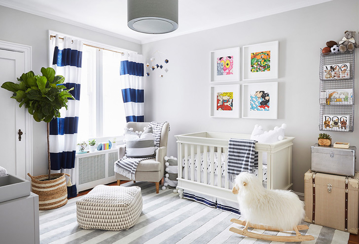

Це єдина кімната, в дизайні якої можна не слідувати правилу «тільки спокійні і натуральні тони». Розділіть кімнату на зони для відпочинку, ігрову та для занять уроками. Наповніть простір яскравими фарбами, повісьте плакати і різні вінілові наклейки. Ліжко та меблі повинні бути з дерева, а на підлогу зазвичай стелять м'який килимок.